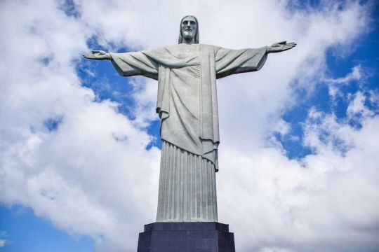
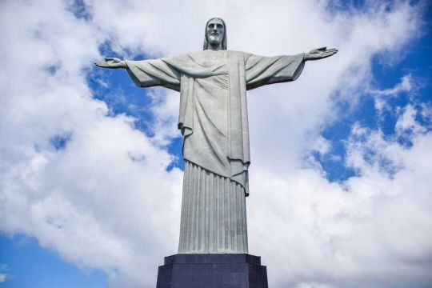
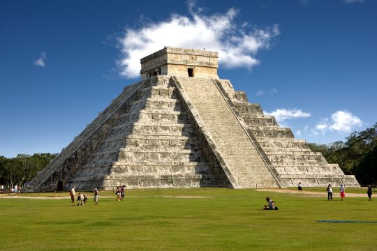
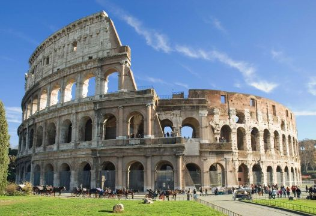
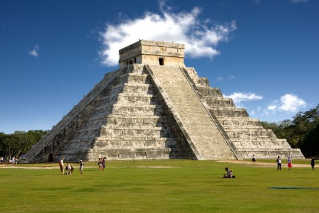
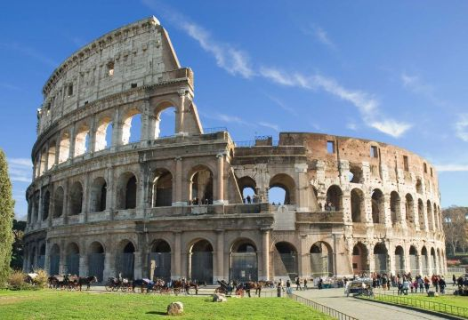

Nazwa Siedem Cudów Świata odnosi się do najbardziej znanych miejsc turystycznych wyłonionych w globalnym głosowaniu organizowanym przez New Open World Corporation.
- Akropol ateński
- Moai
- Wieża Eiffla
- Stonehenge
| Obiekt | Lokalizacja |
|---|---|
| Wielki Mur Chiński | Chiny |
| Petra | Jordania |
| Statua Chrystusa Odkupiciela | Brazylia |
| Machu Picchu | Peru |
| Chichén Itzá | Meksyk |
| Kolosseum | Włochy |
| Tadź Mahal | Indie |
Galeria

 

 


